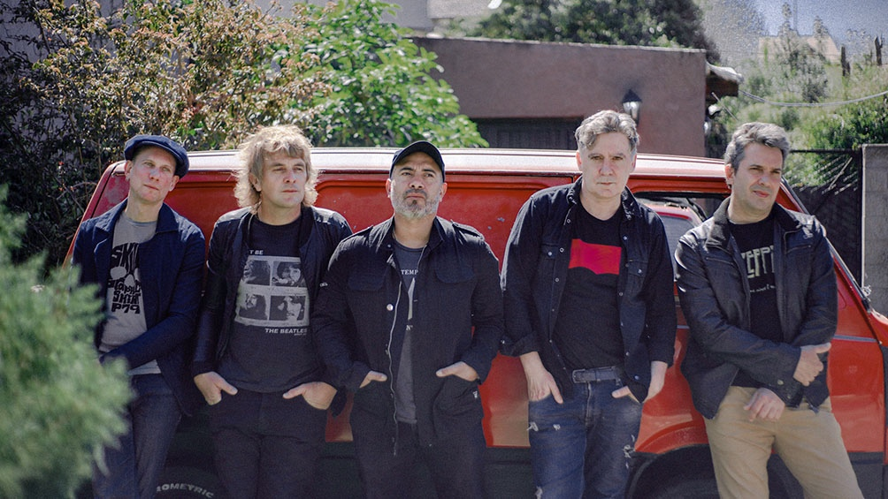

BIOGRAFIA
Ella Es Tan Cargosa es una banda argentina de rock. Se formó a mitad del año 2000. Está integrada por los hermanos Rodrigo (voz) y Mariano Manigot (guitarra y voz), Ildo “El Tano” Baccega (guitarra), Lucas Kocens (bajo) y Pablo “El Negro” Rojas (batería), "la Cargosa", como la llaman sus seguidores, realiza sus primeros shows por el oeste del Gran Buenos Aires (principalmente Castelar e Ituzaingó, de donde provienen los músicos). El nombre, tomado de una canción de los Beatles incluida en el album "Abbey Road" (llamada "I Want You-She’s So Heavy") es un claro homenaje a la banda de Liverpool, aunque Ella es Tan Cargosa consigue agregarle a esta influencia su propia personalidad, con melodías y letras refinadas, construidas sobre una cruda base rockera.
En el año 2002, La Cargosa se transforma en una de las bandas más convocantes de la zona, y al año siguiente, luego de volver de una exitosa gira por la Costa Atlántica, realiza una recordada performance como soporte de León Gieco en Morón, para más de 3000 personas. El 2004 es el año de desembarco de Ella es tan Cargosa en Capital Federal. En junio y noviembre sorprende con dos shows multitudinarios nada menos que en La Trastienda. Al año siguiente, después de cuatro shows en El Condado de Palermo, es considerada en el lugar como una de las bandas del año, junto a grupos como Tipitos o Gazpacho. A fines de 2006 Ella es tan Cargosa graba en el Matadero Records su primer álbum.
Producido por el músico Germán Wiedemer (pianista y arreglador de Memphis La Blusera), el disco contiene las doce mejores canciones presentadas a lo largo de estos años en sus más de 200 shows. Fue lanzado por el sello Tocka Discos a comienzos de 2007. En 2009, la banda presenta una nueva propuesta, bajo el nombre de "Botella Al Mar". En 2011 sale a la venta "11", la terceras placa de Ella Es Tan Cargosa, compuesta por 11 canciones. El título se debe al festejo del 11° Aniversario de la banda. El 7 de noviembre de 2012 CM, el Canal de la Música, transmitió en vivo la 14° edición de los Premios Gardel a la Música. "11" fue nominado a Mejor Álbum Grupo Pop, junto a Tony 70 por "Escaleras doradas" y Miranda! por "Magistral", quien se llevó el premio.
El 5 de junio de 2014 sale a la venta "Polos", festejando ese mismo día en un show gratuito al aire libre, en la ciudad de Castelar. Los cortes son "En Redondel" y "La Banda de Sonido de Tu Vida". La presentación oficial tuvo lugar el 6 de septiembre en La Trastienda. Incluye el tema "Pueblo Fantasma", en el que colabora Manuel Moretti de Estelares. Este disco les vale algunas importantes presentaciones, y así el 15 de octubre de ese año abren el show de Damon Albarn, conocido por ser el líder de la banda británica Blur, en el Teatro Gran Rex. El 1° de marzo de 2015 telonean a Ringo Starr en el marco del Movistar Free Music. El 28 de febrero de 2020, lanzan "Enemigo", el primer adelanto de lo que será su próximo álbum de estudio. El 14 de mayo, la banda presenta "Los Días Felices“, una canción esperanzadora. En noviembre reversionan "Fui" junto a Lula Bertoldi. En marzo del 2021 presenta nueva versión "Ni siquiera entre tus brazos" junto a Coti Sorokin. El 13 de julio la banda lanza una versión de "A trasluz" junto a León Gieco. El 17 de febrero de 2022 lanza una nueva versión de "En redondel" junto a Conociendo Rusia. El 8 de abril lanzan el álbum "Bellos años", un disco que reversiona sus grandes clásicos de 20 años de carrera. El 17 de mayo presentan el corte "Pretensiones" junto a Iván Noble.